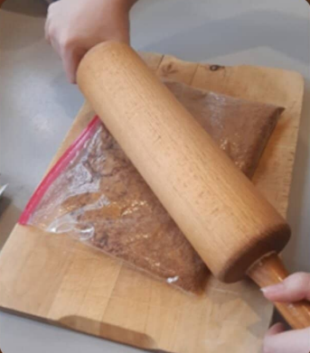
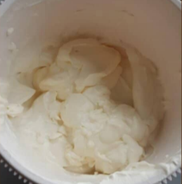
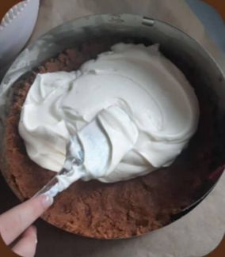
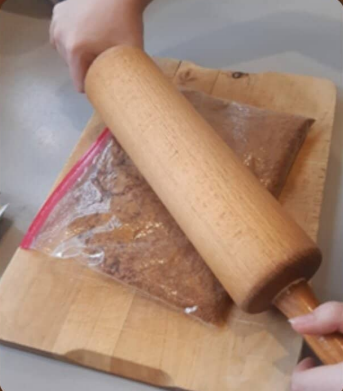
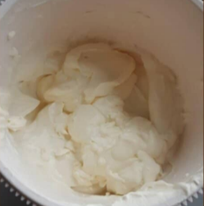
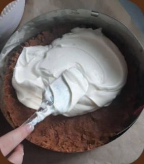

Recept na nepečený cheesecake s karamelom
Ingrediencie
Korpus:
- 250g Lotus susienky
- 120g maslo
Plnka:
- 500g jemný tvaroh
- 250g mascarpone
- 250ml šľahačka
- 120g práškový cukor
Karamel:
- 130g kryštálový cukor
- 70g maslo
- 100g šľahačka
Postup:
Lotus sušienky rozmixujeme, pridáme roztopené maslo a dobre rukou spracujeme. Vtlačíme zmes do formy na pečenie (24-23 cm).
Plnku prichystáme tak, že tvaroh s práškovým cukrom jemne zmixujeme, pridáme mascarpone, vyšľahanú šľahačku a vmiešame do zmesi. Plnku následne navrstvíme na korpus, pekne uhladíme a dáme do chladu, kým urobíme karamel.
Karamel je vcelku jednoduchý. Do hrnca nasypeme cukor a miešame, kým sa nerozpustí, pridáme maslo a za stáleho miešania vytvoríme hutnú zmes. Pridáme šľahačku, zamiešame, kým nie je karamel pekne hladký a odstavíme. Karamel nalejeme na koláč, keď je ešte teplý ale nie horúci. Dáme do chladu cez noc. Cheesecake môžete ozdobiť lieskovcami, sušienkami atď.
Dobrú chuť!
Lucia Kršáková
 




